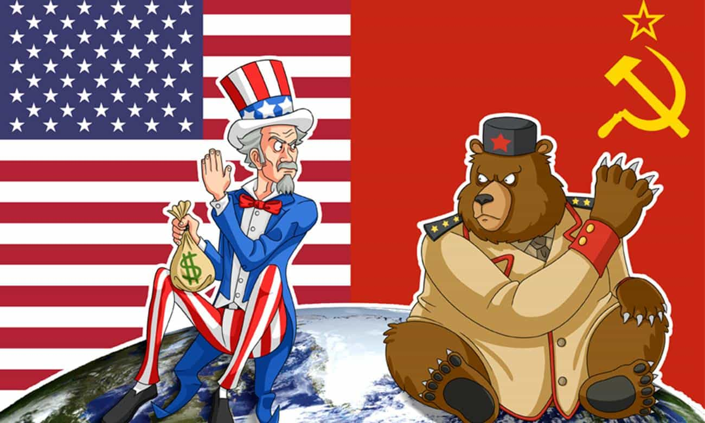

Tudo começou após a segunda guerra mundial. Os EUA e a URSS eram brothers, mas começaram a ter uns desentendimentos e, com isso, deram origem a guerra fria.
A guerra fria foi aquela treta que os caras só ficavam falando:
-- Fica esperto aí, hein. Eu tenho uma puta arma!
E o outro respondia:
Eu tbm tenho, mano. Fica ligado ai!
Os estadunidenses temiam que um ataque russo às bases deles pudessem trazer a público informações sigilosas, tornando os EUA vulneráveis.
Então, foi idealizado um modelo de troca e compartilhamento de informações que permitisse a descentralização delas, aARPANET.